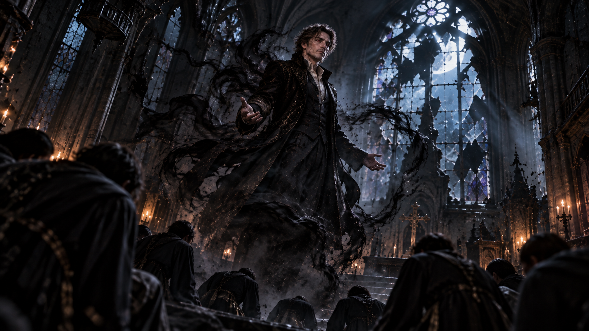
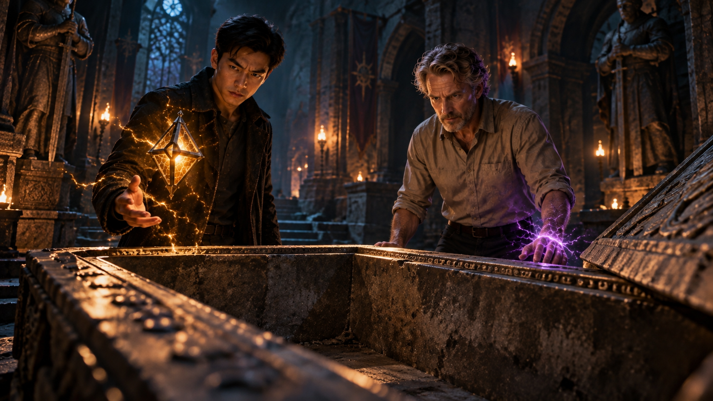

WHITE MAGIC ART STUDIO
第九章
約爾森陵墓
美國・紐約
鐘聲響了。
一下。
兩下。
三下。
這座教堂的鐘，明明已經壞了二十多年。
廢棄的禮拜堂裡沒有燈。月光穿過破碎的彩繪玻璃，落在傾斜的長椅與石柱之間，映出一道道蒼白的光影。
十幾個人跪在中央。
沒有人說話，也沒有人抬頭。
最後一聲鐘響消失時，其中一人忽然倒了下去。
一道微弱的光芒從他身上升起。
那光並非白色，而是一種近乎透明的灰。
它緩緩飄過長椅，穿過殘破的十字架，最後向教堂上方飛去。

黑暗中，有個男人懸浮在半空。
灰色光芒沒入他的胸口。
男人緩緩睜開眼睛。
那是一張柴克看過無數次的臉。
詹姆斯・安德烈。
只是那雙眼睛裡，沒有半點屬於詹姆斯的神情。
男人抬起手，緩緩活動手指。
動作有些僵硬，像是還不太習慣這具身體。
「還不夠。」
低沉的聲音在教堂裡迴盪。
另一道人影從深處走了出來。
鮑勃。
至少，那是柴克曾經認識他的名字。
他在男人面前停下，微微低頭。
「他們的生命，只能讓這具身體恢復。」
男人低頭看著自己的手。
一道黑色雷痕從指尖閃過。
下一秒，金色星芒突然從皮膚底下亮起。
啪！
黑雷瞬間消散。
男人盯著掌心，緩緩握拳。
「卻解不開他留下的封印。」
鮑勃抬起眼。
「十五年了。」
男人轉頭看向他。
「這個人死了十五年。」
他將手按上胸口。
金色星芒再次浮現，沿著胸膛交錯延伸，宛如一道道鎖鏈。
「卻還在反抗我。」
鮑勃沒有回答。
「聖術師。」
男人輕聲念出這三個字。
「總以為犧牲自己，就能證明他們站在正義那一邊。」
鮑勃的眼神微微一動。
「正義……」
他低聲重複。
男人看向他。
鮑勃隨即垂下眼睛。
「我確認過那本書了。只要最後的鑰匙願意轉動，封印就會解除。」
「那個孩子？」
「是。」
「你已經失敗過一次。」
「我原本以為，取得他母親的信任，就能慢慢接近他。」
「結果呢？」
「他比我想像中警覺。」
男人笑了。
那是詹姆斯的嘴角，卻不是詹姆斯的笑容。
「因為你選錯了身分。」
鮑勃抬起頭。
男人緩緩落地，踏著月光向他走來。
一步。
又一步。
直到詹姆斯的臉完整出現在光線下。
「你只是他母親後來認識的男人。」
他抬起手，指尖輕輕碰過自己的臉。
「而這張臉……」
男人微微一笑。
「是他想了十七年的父親。」
鮑勃看著他，沒有說話。
「讓他見到我。」
男人放下手。
「剩下的，我自己來。」
鮑勃沉默片刻。
「他必須心甘情願。」
「我知道。」
「強迫他沒有用。」
男人的目光停在他身上。
「你在提醒我？」
「我在提醒我們都等了很久。」
鮑勃的聲音很平靜。
「不能在最後一步失敗。」
男人凝視他片刻，最後轉過身。
「你很有耐心。」
鮑勃沒有回答。
「仇恨通常沒有這種耐心。」
鮑勃的眼神冷了下來。
男人沒有回頭。
「除非你恨的東西，已經存在很久了。」
禮拜堂裡再次安靜下來。
過了許久，鮑勃才開口。
「有些帳……」
他的聲音很輕。
「本來就不是一代人欠下的。」
男人的嘴角微微揚起。
沒有再問。
鮑勃站在原地，手指無意識地碰向胸前。
衣服底下，似乎藏著某樣很小的東西。
他很快收回手，轉身走入黑暗。
＊
鹽湖城・東湖地下教會
查德的手機被放在桌上。
螢幕早已熄滅。
柴克卻始終盯著它。
「他媽媽說，他已經好幾天沒回家了。」
克里斯掛斷電話。
房間裡沒有人說話。
柴克坐在椅子上，雙手交握，指節因為用力而微微泛白。
雷與傑西站在桌子的另一側。
「其實你昨天說，在夢裡看見查德出事之後，我就開始查了。」
克里斯看向弟弟。
「抱歉，柴克。我只是怕你擔心，才一直沒說。」
他低頭看著手機。
「但到現在，我也沒有找到什麼線索。」
柴克沒有抬頭。
「他去我家找我。」
沒有人回答。
「那些東西也是去找我的。」
「柴克……」
「如果我那時候在家——」
「那你現在可能也失蹤了。」
雷的聲音打斷了他。
柴克抬起頭。
「你不知道當時發生了什麼。」雷說，「別急著把所有責任都放到自己身上。」
柴克沉默片刻。
「可是查德確實可能因為我，才被捲進來。」
「可能。」
雷沒有否認。
柴克怔了一下。
「所以我們會把他找回來。」
雷說得很平靜。
柴克看着他，緊握的雙手慢慢鬆開。
傑西走近桌邊。
「還有一件事。」
他放下一份文件。
「紐約也出事了。」
雷翻開資料。
一張張失蹤人口的照片映入眼簾。
不同年齡。
不同背景。
彼此之間沒有明顯關聯。
只有失蹤時間，集中在最近幾天。
雷翻過最後一頁。
「數量呢？」
「還在增加。」
柴克望著那些照片。
「跟查德一樣？」
「目前還不能確定。」傑西說。
柴克站了起來。
「我要一起去。」
克里斯抬頭。
「去哪？」
「找查德。」
「柴克——」
「我知道。」
柴克打斷他，聲音卻沒有提高。
「我知道我現在什麼都不會。」
克里斯沒有說話。
「我連自己的聖術是什麼都不知道。」
柴克看著他。
「但他是我最好的朋友。」
他停頓了一下。
「我不能什麼都不做。」
房間裡安靜了幾秒。
雷走到他面前，從口袋裡拿出一支手機。
「這是你的吧？」
柴克愣了一下。
「我的手機？」
「剛才先去你家的時候找到的。」
柴克接過手機。
「你不是什麼都不能做。」雷說，「你可以先跟克里斯整理現有的線索。」
他看向桌上的另一支手機。
「你已經見識過你哥哥的聖術了。說不定一支手機，就能讓我們更快找到查德。」
柴克低頭看著自己的手機，又看向克里斯。
「……好。」
他重新坐下。
「克里斯，麻煩你了。」
克里斯笑了笑。
「交給我。」
雷朝他點了一下頭，便轉身離開。
傑西跟了上去。
「雷。」
雷停下腳步。
「怎麼了？」
傑西看了一眼房內的兩兄弟，壓低聲音。
「那些失蹤人口……」
雷看向他。
「十五年前也發生過。」
雷的眼神瞬間變了。
兩人走進走廊。
「你確定？」
「我一直以為，那些人只是召喚儀式的一部分。」
傑西停頓片刻。
「但現在……」
雷看著他。
「如果十五年前的事情正在重演……」
傑西回頭，望向房內的柴克。
「我們得先確認一件事。」
雷沉默了幾秒。
「詹姆斯。」
傑西點頭。
「我要親眼確認，他還在那裡。」
＊
美國・華盛頓州・西雅圖近郊
紫色雷光劃破山谷間的白霧。
兩道人影出現在林間空地。
雷落地時踉蹌了一步，傑西卻已經站穩。
「我永遠不會習慣你的移動方式。」
傑西整理了一下衣袖。
「你哥也是。」
雷看了他一眼。
傑西已經往前走去。
白霧逐漸散開。
山谷深處，一座白色石殿緩緩顯露。
六根巨大的石柱支撐著入口，柱面刻滿古老紋路。
紫色雷光與水藍色波紋沿著石柱緩緩流動，映亮了覆滿青苔的石階。
雷停下腳步。
「這裡就是？」
「約爾森陵墓。」
傑西望著石殿。
「只有家族核心成員知道這個地方。」
兩人踏上石階，走進大殿。
殿堂兩側的石壁上，分別刻著兩種截然不同的元素紋路。
左側是雷。
右側是水。
兩股元素的紋路沿著牆面向前延伸，最後在大殿中央交會。
雷看向一旁的水池。
「約爾森不是雷系家族嗎？」
「不完全是。」
傑西繼續往前走。
「幾代以前，家族裡出現過水之聖術師的血脈。」
雷看著平靜的水面。
「所以你們家現在也有水之聖術師？」
「有。」
傑西的腳步停頓了一瞬。
隨即繼續往前。
兩人穿過大殿，最後來到一座巨大的石台前。
傑西將雙手按上石台兩側的凹槽。
紫色雷電沿著古老紋路迅速蔓延。
轟隆——
巨石緩緩下沉。
一條通往地下的階梯，出現在兩人面前。
階梯深處一片漆黑。
傑西站在入口，遲遲沒有動作。
「怎麼了？」雷問。
傑西望著階梯。
「只是突然想到……」
他停頓了一下。
「上一次走這條路的時候，我背著你哥哥。」
雷沒有說話。
傑西率先走了下去。
「走吧。」
雷跟上。
越往下，空氣越冷。
兩人的腳步聲在狹窄的石階間迴盪。
直到階梯盡頭，一座寬闊的地下殿堂出現在眼前。
殿堂中央，靜靜放著一副棺木。
銀灰色的棺身上，交錯刻著星芒與雷紋。
雷停下腳步。
傑西沒有催促。
過了一會兒，雷才慢慢走近。
他伸出手，將掌心輕輕貼在冰冷的棺蓋上。
金色星紋微微亮起。
「星雷。」
他的聲音很輕。
傑西走到他身旁。
「我知道你哥。」
雷沒有回頭。
「所以我讓人把整副棺材都刻滿星芒。」
雷看著那些紋路。
「很浮誇。」
「他會喜歡。」
雷的嘴角微微動了一下。
「謝謝。」
傑西沒有回答。
雷的手仍然停在棺蓋上。
「十五年了。」
他低聲說。
「一直聽你提起這裡，我卻一次都沒來。」
「我知道。」
雷看向他。
「你不覺得我很差勁？」
「不。」
傑西走到棺木另一側。
「我覺得你只是不敢。」
雷看了他一眼。
沒有反駁。
片刻後，他收回手。
「打開吧。」
傑西深吸一口氣，從口袋裡取出一把小刀。
刀鋒輕輕劃過掌心。
雷看向他。
「你在棺木上也設了血脈鎖鑰？」
「對。」
傑西將刀收起。
「不過我沒有你哥那麼厲害。只要是約爾森家族的血脈，都能啟動。」
雷皺眉。
「那不就代表其他人也能打開？」
「安德烈家族以勇氣聞名，約爾森家族則以忠誠聞名。」
傑西抬起手。
「沒有我的命令，他們不會擅自來這裡。」
雷的目光落在他的手指上。
那枚象徵約爾森家主身分的「鳴之戒」，正泛著淡淡的紫光。
傑西將掌心按上棺蓋。
鮮血與紫色雷光交融，沿著古老紋路緩緩流動。
第一道封印熄滅。
接著是第二道。
第三道。
喀。
棺蓋傳來一聲輕響。
傑西抬頭。
「準備好了嗎？」
雷看著棺木。
「沒有。」
傑西微微一怔。
雷伸出手。
「開吧。」
兩人一同推動棺蓋。
沉重的石板緩緩滑開，摩擦聲在地下殿堂裡迴盪。
一寸。
兩寸。
直到棺木內部逐漸顯露。
雷的手停住了。
傑西也停了下來。
裡面——
什麼都沒有。
雷盯著空蕩蕩的棺木。
許久。
「……傑西。」
傑西的臉色已經變了。
「人呢？」
沒有回答。
雷轉頭看他。
「詹姆斯在哪？」
「不可能。」
傑西立刻繞到棺木旁。
「不可能……」
他伸手摸過棺底，又仔細檢查內側的紋路。
沒有幻術。
沒有隱藏術式。
棺木裡空無一物。
「我親手把他放進去的。」
雷看著他。
「還有誰知道這裡？」
「沒有人。」
「誰還會想打開？」
「沒有人。」
「傑西。」
「我說了沒有人！」
聲音撞上石壁，在空蕩的殿堂裡迴盪。
傑西自己也愣了一下。
雷沒有再問。
過了幾秒，傑西忽然抬頭。
他的目光掠過入口，最後停在右側石牆上。
那裡有一道極淡的水痕。
雷也看見了。
「那是什麼？」
傑西沒有回答。
他緩緩走近，伸手碰上石牆。
水痕早已乾涸。
但殘留的元素氣息仍在。
傑西的手指微微顫抖。
「……不。」
雷皺起眉頭。
「你知道是誰？」
「不可能。」
「傑西。」
傑西閉上眼睛。
過了很久，才緩緩開口。
「塞西爾・約爾森。」
雷從未聽過這個名字。
「誰？」
傑西睜眼，仍然望著那道水痕。
「我堂哥。」
雷一怔。
「約爾森家族近百年來，最強的水之聖術師之一。」
「那我怎麼從來沒聽過？」
傑西扯了扯嘴角。
「因為家族把他刪掉了。」
「什麼意思？」
「家譜、紀錄、照片……」
傑西停頓了一下。
「所有跟他有關的東西，全都被清掉了。」
雷看著他。
「為什麼？」
「家族說他背叛了我們。」
傑西垂下眼。
「修習禁術、接觸惡魔，最後被放逐。」
雷沒有立刻接話。
片刻後，他問：
「家族說？」
傑西抬頭。
「你不相信？」
傑西沉默很久。
「我那時候還很年輕。」
他再次看向牆上的水痕。
「只記得有一天，所有人突然都不准再提他的名字。」
「連他留下來的東西，也全被收走了。」
雷望向空棺。
「但他是約爾森家族的人。」
「對。」
「也是水之聖術師。」
「對。」
「所以他能打開棺木。」
傑西的臉色越來越難看。
「如果他還活著。」
雷沉默片刻。
黑水。
變形。
瑞秋的男友。
襲擊柴克的巫師。
還有那本《血祭封印》。
雷抬起頭。
「鮑勃。」
傑西沒有回答。
雷看向牆上的水痕。
「黑水。墮落後的水之聖術。」
傑西的目光微微一變。
「而且他在找《血祭封印》。」
雷看著他。
傑西緩緩轉頭，望向空蕩蕩的棺木。
「……塞西爾。」
這一次，那個名字不再只是被家族抹去的過去。
雷也看向棺木。
「如果真的是他……」
傑西接了下去。
「他拿走詹姆斯，不只是為了這具身體。」
「是為了封印。」
雷說。
「魔神一直被封在詹姆斯體內。」
傑西的臉色瞬間變了。
十五年前，詹姆斯最後留下的話。
血祭封印。
雷翼。
傑西猛地抬頭。
「等等。」
雷也看向他。
「如果他想完整解開血祭封印……」
兩人對望。
同時想起了同一個人。
「柴克。」

＊
紐約・廢棄教堂
地下室裡沒有燈。
鮑勃獨自站在一張舊木桌前。
桌面上攤著幾份泛黃的文件。
其中一張早已殘破不堪，大部分文字都無法辨認。
唯有一個姓氏，仍然清楚地留在紙上。
JOELSON
鮑勃看了很久。
接著，他將紙張重新折好，收進外套內袋。
門外傳來腳步聲。
他抬起頭。
在轉身之前，低聲說了一句。
「快了。」
片刻後。
「你等得夠久了。」
門開了。
鮑勃沒有回頭。
黑暗重新吞沒了他的身影。